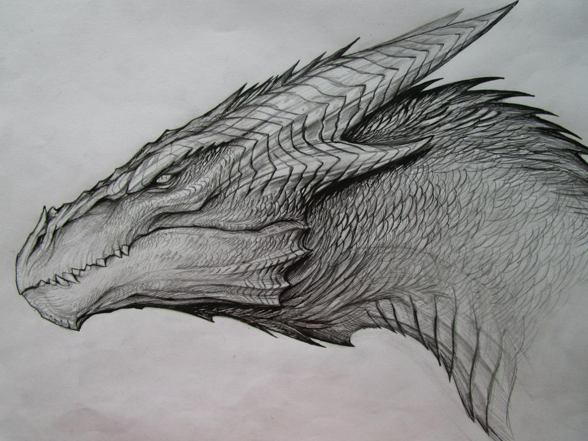

What Is The Weave?
The multiverse in this universe is not a set of parallel timelines or variations of the same world. Every reality is genuinely distinct — different physics, different histories, different magic, different origins. No two share meaningful similarity. The connective tissue between them is called The Weave.
Earth is a nexus world — not chosen or blessed, but structurally central. It sits at a convergence point in The Weave and serves as the primary source of the universe's most important travelers. In exchange, Earth receives a passive cosmic buffer against existential threats from beyond — though it offers no protection against human-caused catastrophe.

Concept art for The Weave Universe — creatures of power that predate the nations.
The Autoimmune Response
When a world within the Weave faces a conflict so volatile that outcome is genuinely unknowable — not just dangerous, but unresolvable at extinction scale — the Weave responds automatically. It tears a traveler from the nexus and deposits them on the threatened world as a cosmic variable. It does not send champions. It sends possibilities. This mechanism is so rare and poorly understood that no character will ever know this is what happened to them within a single series.
World Walkers
World Walkers are people torn from Earth and deposited on a world in crisis. Extraordinarily rare — across all of history, the total number of walkers who have ever existed could likely be counted. They leave almost no trace on the worlds they pass through: at best, a relic that outlasts them.
-
The Trigger
- Every walker has a unique trigger — no two are the same
- Triggers are involuntary; walkers do not choose to cross
- Examples: grief, near-death, euphoria, betrayal, profound achievement
- Kael's trigger: loss of a beloved person — the death of his grandfather at the peak of grief
-
The Memory Problem
- Arriving on a new world, walkers lose memories of previous worlds and powers developed there
- The loss is fog, not erasure — phantom instincts remain
- Muscle memory for weapons never held, reflexes that don't make sense
- Genuine memories and power return gradually through action and trauma — body and soul remember before the mind does
-
Power Accumulation
- Walkers carry abilities shaped by every world they have passed through
- Powers are locked behind memory fog on each new world
- A long-traveled walker is an enormous reservoir of ability they cannot reliably access
- Two worlds with opposing magical systems may live inside the same walker simultaneously
-
Relic Recognition
- When a walker handles an object created by or connected to another walker, they feel it
- Not memory, not knowledge — recognition without source
- The hands know before the mind does
-
Names Across Worlds
- World Walkers — Earth's term, the official designation
- Wardens / Guardians — protective framing used by some cultures
- The Torn — victim framing, emphasizing involuntary crossing
- The Lost — victim framing, emphasizing displacement and memory loss
- Wanderers — neutral, rootless framing
The Magic System
The world runs on a two-tier structure. Consumptive magic is the norm — common enough that a market vendor might use a wind charm or a laborer carry a practical trick. Allegiance magic, drawing directly from a greater power's domain, is the aberration.
Consumptive Magic — The Three Elements
Every spell requires three components working together:
- The Material — the component consumed. Ranges from dirt and feathers to rare beetle blood. Quality and rarity determine power.
- The Form — deliberate physical action. A breath, a snap, a shape traced in air.
- The Word — spoken component. More powerful effects require more precise language.
The Permanence Spectrum
- Instant / Consumptive — component destroyed, effect immediate and finite
- Temporary Ability — component grants an ongoing effect for a duration
- Anchored Cantrip — sufficiently practiced minor magic becomes componentless through deep internalization
- Permanent Acquisition — rare component in a specific ritual grants an ongoing baseline ability. The holy grail.
Allegiance Magic — The Aberration
- The Touched — passive, unconscious. People who have lived in alignment with a power's domain long enough that small abilities bleed through without intention.
- Devotees — conscious theological relationship. More consistent ability.
- Allegiance Mages — threshold where ability becomes undeniable and publicly visible. Cannot be guild-certified. Extremely rare.
- The Champion / Designated — specifically chosen by a greater power. Direct communication with sponsor. Living ones are destabilizing events.
Worldbuilding Inspiration
A video on crafting deep, interconnected fantasy magic systems — the kind of thinking that shaped The Weave:
Video: fantasy worldbuilding and magic system design inspiration for The Weave Universe.
The Pantheon
Greater powers are not gods of nations but gods of people. Their influence moves through culture and individual devotion, not flags or borders. Religious tension runs within nations, not between them. And there is a deep hidden truth no character in any series will ever be told: belief creates power. The greater powers were once mortal.
The Six Powers & Their Current Positions
| Power | Domain | Position |
|---|---|---|
| The Keeper | Preservation; now fractured by a new restitution current | Evolving / Fractured |
| The Undone | Extreme emotion — grief, rage, love, joy at their absolute peaks | Drifting toward Keeper |
| The Last Companion | Death as sacred and inevitable; opposes undeath as violation | Against |
| The Witness | Secrets, oaths, the sanctity of what is held | Against |
| Endurance | Struggle, survival, the fight to continue — not a war god | Against |
| Spark | Creation, knowledge, invention — the moment before something exists | Impartial / Watching |
The theological crisis driving Book One: a noblewoman used a dead power's rituals to bring her husband back through The Last Companion's threshold. He came back — fully real, warm, himself. The ripple effects are reshaping every power on the continent simultaneously.
Book One — The Party
Each series follows one walker on one world facing one catastrophic conflict. Book One follows Kael, who arrives already grieving his grandfather and stumbles into a world mid-crisis — before he knows what he is or what the Weave wanted from him.
- Kael — Earth. First crossing. Power of possibility — finds the version of the moment where things go slightly differently and makes that one real. Reads as absent where a magical signature should be.
- Daen (Daenrath Cassovyn) — Quarter elf. Ranger, thief, neutral pragmatist. Unknowingly the instrument of his own house's collapse. Theological lean: The Last Companion.
- Less (Telaliless Cassovyn) — Daen's sister. Incomplete university education. Maps patterns before others articulate them. Concealing an expulsion from her brother. Theological lean: Spark.
- Tessa — Witness devotee from Sorvane. Former mage apprentice. Constitutionally committed to honesty — falling for someone who doesn't know who he is.
- Hal (Halvorn) — Part giant. Military veteran from the buffer territory between Skaln and Rael. Carries a battlefield mistake his code cannot forgive. Theological lean: Endurance.
- Riven — Shapeshifter in exile from the western jungle communities. Reads as too much in the wrong places to magical perception.
Data Visualization
An interactive Tableau visualization exploring the most common words across 1,000 of cinema's greatest films — what language tells us about the stories that endure. Hover over words to explore counts and rankings. ↗ View full-page version

Source: Tableau Public — 1000 Greatest Films / Film Words